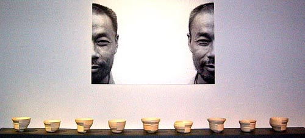

| 4th World Ceramic
Biennale 2007 Korea
Deadline: October 6, 2006
 The
World
Ceramic Exposition Foundation (WOCEF) initiated the World
Ceramic Biennale Korea (CEBIKO)
in 2001. There are multifarious biennales in the world, but there
are not many biennales being held under the theme of ceramics. Amongst
Ceramic Biennales being held all around the world, CEBIKO has established
itself as an outstanding ceramic biennale in terms of its quality
and size. The
World
Ceramic Exposition Foundation (WOCEF) initiated the World
Ceramic Biennale Korea (CEBIKO)
in 2001. There are multifarious biennales in the world, but there
are not many biennales being held under the theme of ceramics. Amongst
Ceramic Biennales being held all around the world, CEBIKO has established
itself as an outstanding ceramic biennale in terms of its quality
and size.
Korea, along with China, has a distinguished history and tradition
in world ceramic history and astounding numbers of ceramic masterpieces
including Goryeo Celadon and Joseon White Porcelain prove Korea
as a nation of ceramics, therefore it is only natural for Korea
to hold a world ceramic biennale.
  
Ceramists from every corner of the world are invited to take part
in the 4th World Ceramic Biennale 2007 Korea International Competition.
This grand-scale international event, frequented by the world's
finest ceramic artists, focuses on defining new values and creative
direction for 21st century ceramic arts. The international competition,
one of the main events of the World Ceramic Biennale Korea, will
be held from April 28 to June 24 2007 where ceramic artists from
across the globe will compete in categories of "Ceramics for
Use" and "Ceramics as Expression."

Winner of the Grand Prize, Cebiko 2005 - Philippe
Barde, (Switzerland), Human Bowl Faces.
Any individual or group regardless of age, gender or nationality
may enter. There is no size restriction; each individual or group
is allowed to submit up to 3 entries in total regardless of categories.
This year no specific theme is given. Entrants are free to express
their innovative and original ideas that will contribute to the
development of the ceramic industry and arts.
The judging panel will be comprised of venerated ceramic experts
from each continent, and the winners of the competition will receive
the largest cash prize ever conferred (Grand Prize: KRW 60 million,
Total: KRW 213 million) to encourage the spirit of creativity and
contribute to the development of ceramic arts. We anticipate talented
and innovative artists to take part in the 4th CEBIKO International
Competition to open a new horizon for 21st century ceramic arts.
Application
form for Cebiko 2007. Deadline: October 6, 2006.
More Articles
|